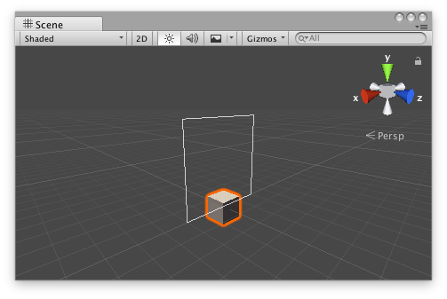

Handles.Button
public static bool Button(Vector3 position,
Quaternion direction,
float size,
float pickSize,
Handles.CapFunction capFunction);
Parameters
| position | The position to draw the button in the space of Handles.matrix. | |
| direction | The rotation of the button in the space of Handles.matrix. | |
| size | The visual size of the handle. Use HandleUtility.GetHandleSize if you want a constant screen-space size. | |
| pickSize | The size of the button for the purpose of detecting a click. Use HandleUtility.GetHandleSize if you want a constant screen-space size. | |
| capFunction | The draw style of the button. |
Returns
bool True when the user clicks the button.
Description 描述
Make a 3D Button.
This button works like one drawn with GUI.Button, but it has a 3D position and is drawn by a handle function.

Button Handle as a rectangle in the Scene View.
Add the following script to your Assets folder as ButtonExample.cs and add the ButtonExample component to an object in a Scene.
using UnityEngine;
public class ButtonExample : MonoBehaviour {}
Add the following script to Assets/Editor as ButtonExampleEditor.cs and select the object with the ButtonExample component.
using UnityEditor; using UnityEngine;
[CustomEditor(typeof(ButtonExample)), CanEditMultipleObjects] class ButtonExampleEditor : Editor { protected virtual void OnSceneGUI() { ButtonExample buttonExample = (ButtonExample)target;
Vector3 position = buttonExample.transform.position + Vector3.up * 2f; float size = 2f; float pickSize = size * 2f;
if (Handles.Button(position, Quaternion.identity, size, pickSize, Handles.RectangleHandleCap)) Debug.Log("The button was pressed!"); } }